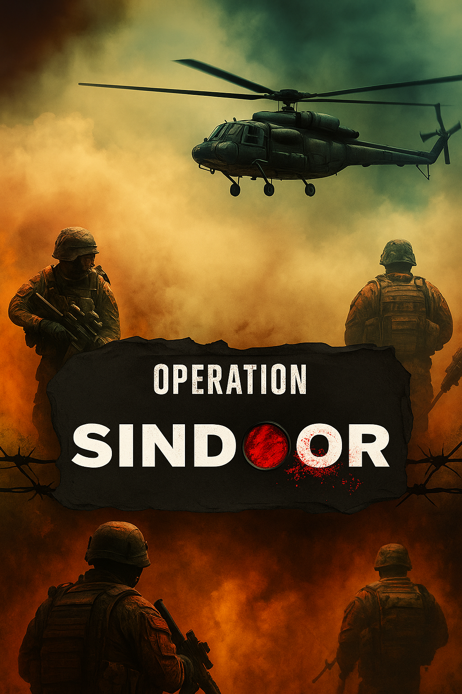

What is Operation Sindoor ?
Operation Sindoor is a strategic military operation launched by India in May 2025 in response to a terrorist attack in Pahalgam.
view more
Why Operation Sindoor ?
Operation Sindoor was launched by India in response to the brutal terrorist attack in Pahalgam (Jammu & Kashmir) on April 22, 2025, which killed 17 innocent civilians and injured over 40.
view more
Where done the Operation Sindoor ?
Operation Sindoor was conducted across multiple terrorist camps in Pakistan and PoK, including Muzaffarabad, Bahawalpur, Kotli, and Sialkot.
view moreHow was Operation Sindoor carried out?
Operation Sindoor was a multi-phase, precision military campaign executed by India in May 2025, combining airstrikes, ground artillery, drones, and electronic warfare.
view more